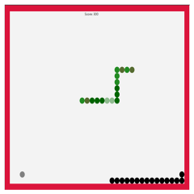

a programmer
I am a senior student at University of Massachusetts Boston, major in Computer Science. I am focusing on making softwares and web developing.
I love challenging myself to find a creative and optimal solution for any problem I encounter. I see myself as a fast learner. I respect others' ideas, and I strive to learn. For me knowledge is something that you can never get enough of.
|  Click to download & try |
My friend and I use Java to build a GUI from an existing Snake game. Then we add difficulty level to the game such as changing speed and having borders. Then we implement and AI snake based on the code of the snake. The AI grows as the player's snake grows. We write code to handle the direction when the snake approaching the borders or corners. Otherwise, the AI snake will be moving randomly. The game was presented in class and played by the professor and 20 classmates. |